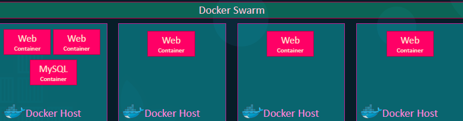

E' complesso ma possiamo darci un occhiata:
Semplicemente:
Docker Swarm permette di gestire più nodi con Docker sopra.

Per iniziare:
1) Dobbiamo avere degli hosts con Docker installato sopra.
2) Elegiamo il nodo che gestirà gli altri nodi come Swarm Manager "docker swarm init"
3) Facciamo joinare i Worker Nodes con il token

Per eseguire un comando su un singolo nodo, possiamo fare "docker run" classico.
Ma come possiamo farlo per gli altri nodi?
Posso farlo a partire dallo "Swarm Manager" tramite il 3 comando.
Ma posso specificare anche reti e porte!